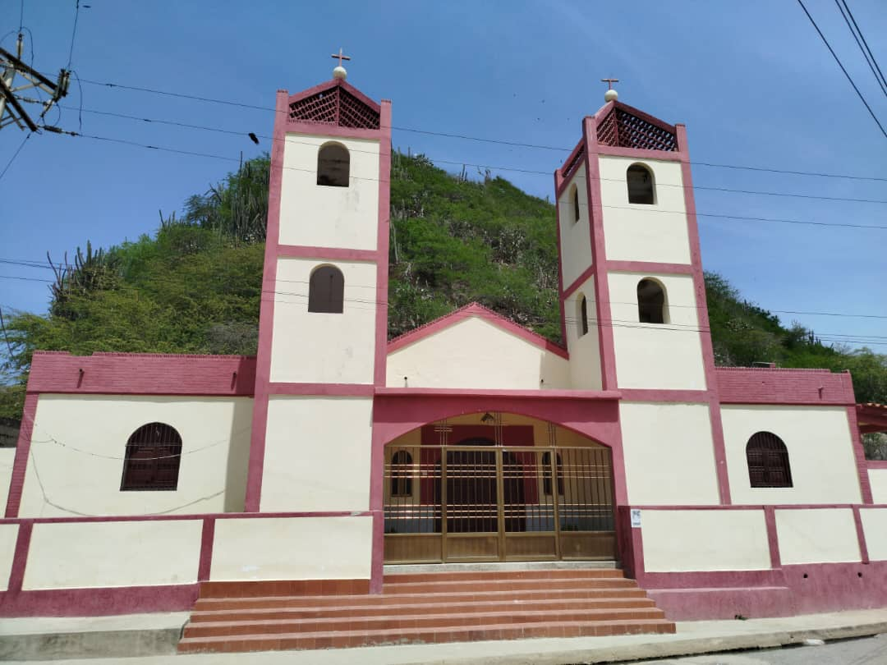
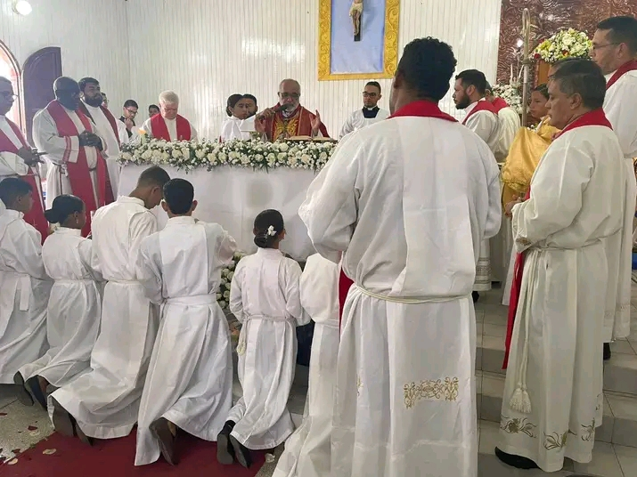
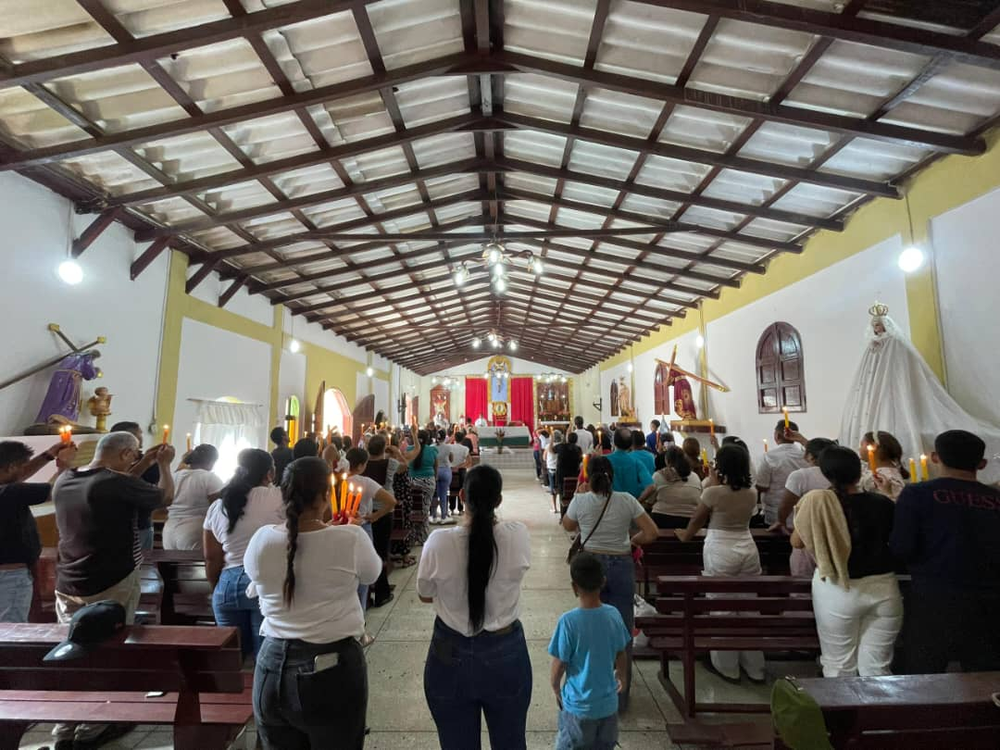
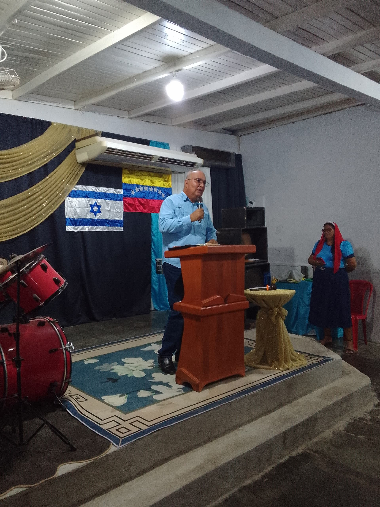
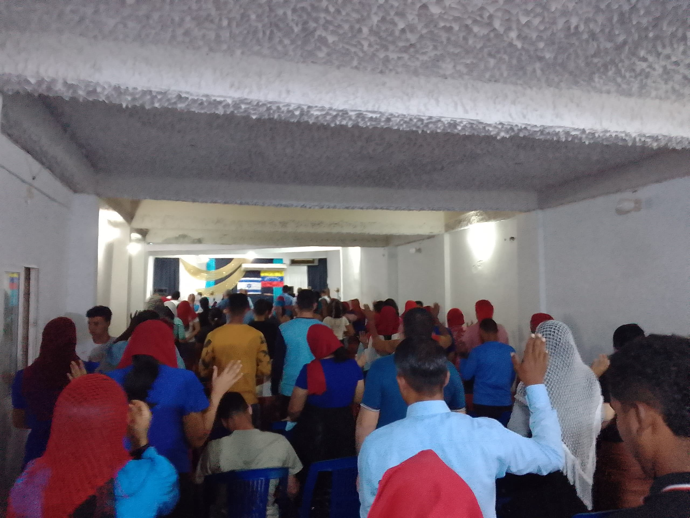
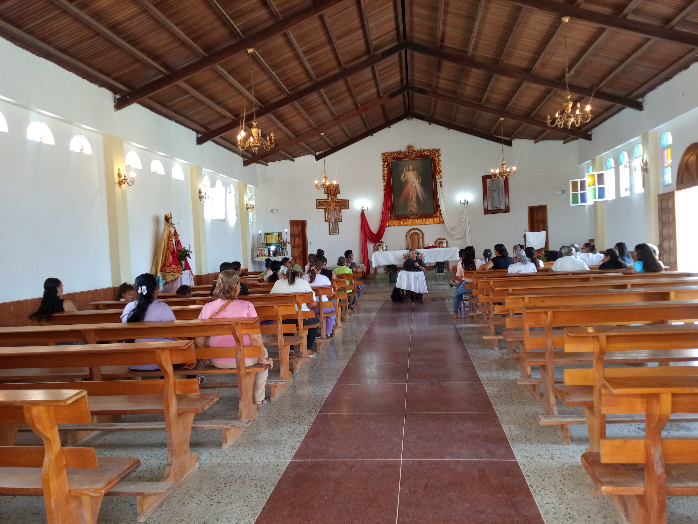
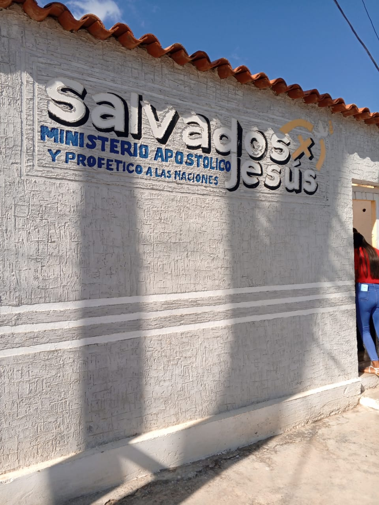
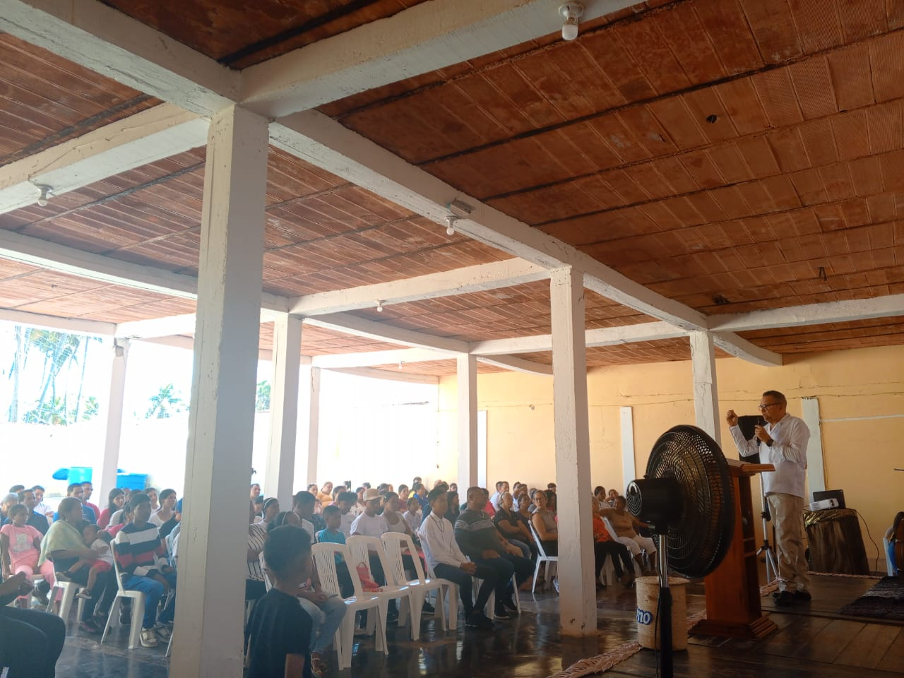
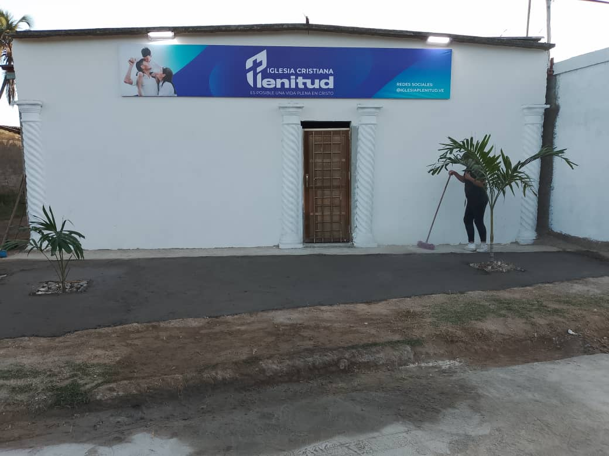
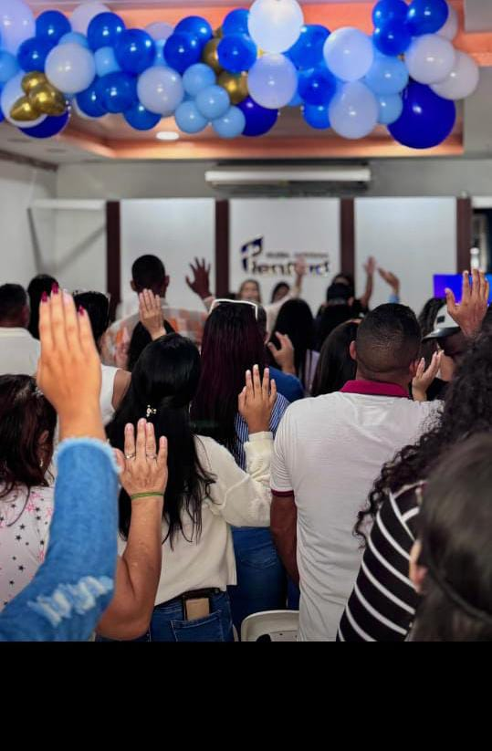

Fue fundada en 22 de Febrero de 1920 por la Ribers Misión, una fundación de maestros cristianos, provenientes de Estados Unidos, quienes llegaron a El Morro con la finalidad de constituir una escuela para enseñar a leer y escribir. Es una iglesia Cristocentrica fundamentados en la doctrina bautista. Su principal actividad es la escuela dominical, reúne aproximadamente 350 personas entre niños, jóvenes y adultos el domingo en la mañana, realiza además servicios de oración, acción de gracias, servicios de alabanzas. Tiene un ministerio que se encarga de visitar a los enfermos en casa, hospitales, etc, regalan alimentos a los necesitados, entre otros. Su enfoque son las personas que no conocen a Jesús como Salvador sin distinción alguna.
Religiones de El Morro de Puerto Santo
Descubre las tradiciones y celebraciones más importantes de nuestro hermoso pueblo en Sucre, Venezuela
Bienvenido a nuestras tradiciones
Explora las diferentes congregaciones religiosas que forman parte de la identidad cultural y espiritual de nuestra comunidad.
Peniel
Horarios de Encuentro: Culto Dominical: Domingo 9:00am-12:00m
Ubicación: En el sector Los Olivito
Galería de Peniel


San Ramon
devoción a San Ramón es el corazón histórico de nuestra identidad religiosa, con raíces profundas que se remontan a 1960. En aquella época, la comunidad se congregaba en una emblemática capilla de estilo colonial. Las visitas del clero eran un acontecimiento muy esperado: un sacerdote acudía exclusivamente el día del santo patrono para oficiar la Santa Misa, una fecha de fiesta y reencuentro que toda la población aprovechaba con alegría para celebrar los bautizos de sus niños.
Una histórica imagen que fue traída directamente desde España gracias a la devoción y gestión del señor Rafael Lugo. Hoy en día, aunque la infraestructura ha evolucionado y comparte una estrecha conexión organizativa y operativa con el Templo Jesús de la Divina Misericordia, la esencia de San Ramón sigue viva. Sus festividades patronales, fuertemente arraigadas en el sentimiento local, se celebran cada año llenando las calles de fe.
Horarios de Encuentro: Culto Dominical: 9:30 AM. a 12:30 PM.
Ubicación:Final de la Calle Principal
Galería de San Ramón




Luz del Mundo
Ubicada en la calle Cementerio, frente a la emblemática zona del Tajamar en El Morro de Puerto Santo, la Iglesia Luz del Mundo representa una de las congregaciones con mayor trayectoria en la región. Con 43 años de fundación, este templo forma parte de la sólida estructura de la Obra Evangélica Luz del Mundo, organización nacional e internacional fundada por el Dr. Jaime Banks Puertas, cuyo liderazgo ha llevado el mensaje cristiano a más de 48 naciones.
Esta comunidad de fe se distingue por su arraigada identidad pentecostal, fundamentada en la creencia de la Trinidad Divina y el bautismo del Espíritu Santo. Fieles a una sana doctrina, la congregación mantiene una estética conservadora que simboliza su consagración espiritual, reflejando disciplina y respeto en su conducta diaria.
Horarios de Encuentro: (Domingos) Mañana: 8:00 a.m. a 12:00 p.m. Tarde/Noche: 6:00 p.m. a 9:00 p.m.
Ubicación:Sector El Cementerio
Galería de Luz del Mundo




Santa Barbara
El Templo Jesús de la Divina Misericordia (Santa Bárbara), ubicado en el Sector Salina 1, fue construido entre 2006 y 2008 bajo la guía del sacerdote Marcelo Bandi. Su comunidad está unida históricamente a la tradición de San Ramón (que data de 1960, cuya imagen fue traída de España por Rafael Lugo). Actualmente, el templo está a cargo del párroco Jesús Gregorio Guerra (Diócesis de Carúpano), congrega a unos 50 fieles fijos (más 10-50 visitantes en fechas clave) y concentra sus misas solemnes en los Domingos de Ramos y de la Divina Misericordia. La vida del templo se sostiene en tres pilares de apostolado (Catequesis de la Escuela San Ramón, Legión de María y Renovación Carismática) y destaca por su labor social a través de Cáritas, ofreciendo jornadas médicas y de oftalmología a la comunidad.
Horarios de Encuentro: Sabados: 9:30 AM. a 12:30 PM.
Ubicación:Sector Salina I
Galería de Santa Bárbara




Salvados x Jesus
Bajo la firme convicción de que "lo que Dios promete, lo cumple", el Ministerio Apostólico y Profético a las naciones "Salvados X Jesús" ha consolidado una trayectoria de fe y servicio en El Morro de Puerto Santo. Fundada el 11 de noviembre de 2012 por los pastores Luis Amaurys Lugo y Zobeida de Lugo, esta congregación inició su camino en Puerto Santo y hoy se establece con sede propia en la calle El Cementerio, sector Los Cocos.
La visión de la iglesia es extender el Reino de los Cielos en la tierra, con la misión fundamental de inspirar a las multitudes a acercarse a Cristo. Actualmente, la comunidad cuenta con aproximadamente 70 personas bautizadas y una asistencia constante de entre 30 y 40 niños, reflejando un crecimiento sostenido basado en el trabajo en equipo de adultos, ancianos y jóvenes.
Horarios de Encuentro: Culto Dominical: 9:30 AM. Servicios Semanales (Miércoles, Jueves y Viernes): 6:30 PM.
Ubicación:Sector Los Cocos
Galería de Salvados x Jesus




Plenitud
Con una trayectoria de 12 años de servicio ininterrumpido en la comunidad, la Iglesia Plenitud se ha consolidado como un espacio de restauración y esperanza en El Morro de Puerto Santo. Ubicada en la calle El Cementerio, sector Los Cocos, esta congregación trabaja con la firme misión de dar a conocer el amor de Dios a cada familia, convencidos de que una sociedad transformada comienza con el fortalecimiento espiritual del hogar.
Actualmente, la iglesia cuenta con una comunidad activa de aproximadamente 60 miembros, entre los cuales se integran personas bautizadas, creyentes y visitantes que se suman semana a semana. Su labor no solo se enfoca en la enseñanza doctrinal, sino en crear un ambiente de pertenencia donde cada asistente pueda experimentar un crecimiento personal y espiritual.
Horarios de Encuentro: Jueves (7:00 p.m.): Discipulado. Domingos (7:00 p.m.): Servicio Dominical.
Ubicación:Sector Los Cocos
Galería de Plenitud




M.A.P. Nueva Generación
El Ministerio Apostólico y Profético (M.A.P.) Nueva Generación es una comunidad cristiana establecida en el sector Salinas 2 de El Morro, Estado Sucre, con una trayectoria que inició el 19 de junio de 2012. Bajo una doctrina de fe pentecostal, esta institución se dedica a la búsqueda espiritual de Dios y al fortalecimiento de los principios cristianos, utilizando la Biblia como su manual fundamental de conducta y amor al prójimo. Con una congregación de aproximadamente 40 miembros, el ministerio se ha convertido en un referente de esperanza y formación espiritual para la comunidad local.
Horarios de Encuentro: Culto Dominical: 9:30 AM. Servicios Semanales (Miércoles, Jueves y Viernes): 6:30 PM.
Ubicación:Punto Rojo, en Salinas II
Galería de M.A.P. Nueva Generación